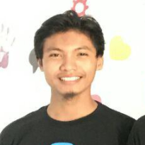
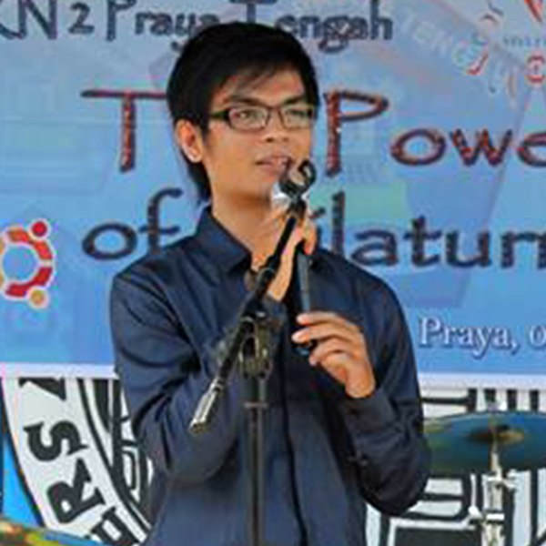

Pertemuan berikutnya : Minggu, 15 Oktober 2017
Pukul 09.00 WITA sampai selesai
@ ITEC
https://goo.gl/maps/vzwDv1h8HSs
10
tech talks dan target peserta adalah :
pelajar, mahasiswa, developer, pemrogram,
engineer, sysadmin dan profesi terkait


Pembicara

Rizky Ariestiyansyah
Ngoprek Realitas Maya di Web (Web Virtual Reality)

Eby Sofyan
Android Devs, 5 Menit Mesra Bersama Kotlin

Herpiko Dwi Aguno
Revolusi Kultur DevOps

Hayi Nukman
Jenkins, Perkakas CI/DI untuk DevOps

Deni Marswandi
Membangun Rest API dengan Golang

Lalu Erfandi Maulana Yusnu
Tensorflow dan Tebak Gambar Bersama Komputer

Hadian Wijaya
Berajah Pinak Web Kadu Base Sasak

Kominfo (sedang dikonfirmasi)
Infrastruktur Kunci Publik

Dr. Sapto Sutardi
Bagaimana Tidur Teratur Sebagai Pemrogram

Nino
Pengenalan Swift
Kamu?
Yuk Berbagi dan Berkolaborasi!
Moderator

Saeful Bahri